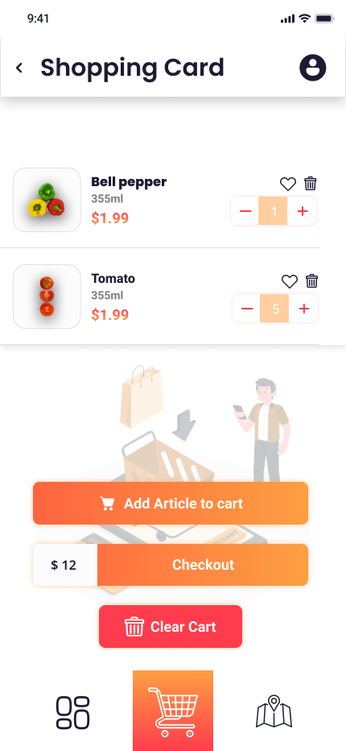
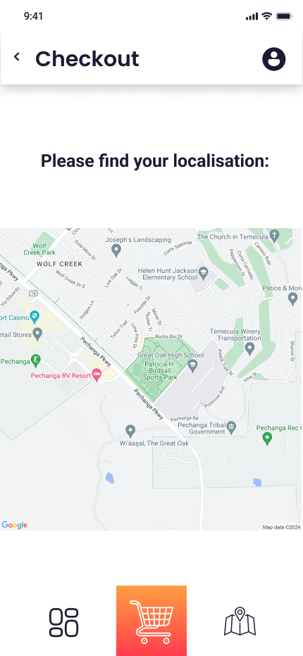

Super Marché Alimentaire
Food Product est une application mobile innovante de commerce alimentaire, conçue pour offrir une expérience d'achat fluide et personnalisée. Cette plateforme permet aux utilisateurs de découvrir et commander une large gamme de produits alimentaires frais et de qualité, avec la possibilité de personnaliser leurs préférences et de suivre leurs commandes en temps réel.
En tant que web designer, j'ai créé une interface épurée et intuitive qui met en valeur les produits tout en simplifiant le parcours d'achat. Le design s'adapte parfaitement aux appareils mobiles, avec une attention particulière portée à l'accessibilité et à la facilité de navigation, permettant aux utilisateurs de trouver et commander rapidement leurs produits préférés.
Technologies utilisées
Figma
Adobe Photoshop

